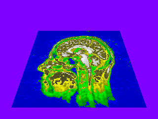
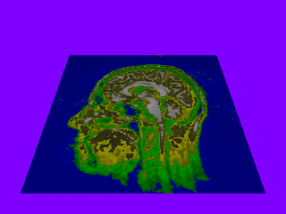

BasicShader.h
This is a simple example to show what a vertex shader and pixel shader look like. The pixel shader just draws a texture onto a flat mesh. The vertex shader modulates the texture by lighting. You can toggle on/off the vertex shader. The top image uses only the pixel shader. The bottom image uses both the vertex and pixel shader.
|  |
|  |